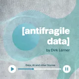

Dr. Simon Harrer
Co-Founder & CEO, Entropy Data
Gerolzhofen, Germany
Product engineer at heart who loves to create together with curious minds.
Currently: building a data product marketplace for humans and agents at Entropy Data.
Technical steering committee member for ODCS and ODPS, the open data contract and data product standards, at the Linux Foundation.
Recent & upcoming
Talks
All 70 talksPodcasts & interviews
All 26 appearances
antifragile data — upcoming episode Upcoming antifragile data · with Dirk Lerner · Video 🇺🇸 The Data Culture Podcast — Data Products & Data Contracts in the AI Age: Ownership, Standards, Semantics BARC · with Dr. Carsten Bange · Video 🇩🇪 Daten-WG — Davon träumen KI-Agenten Daten-WG · mit Artur König · Video 🇺🇸 The Data Playbook — Data Contracts and Data Products: What AI Agents Need to Access Enterprise Data Dataminded · with Kris Peeters · VideoEntropy Explains
Short animated explainers from Entropy Data on data contracts, data products, and semantics — one concept in under three minutes each.
By the numbers
70 talks · 26 podcast & interview appearances · 6 books · 6 articles · 8 peer-reviewed papers · 6 open-source projects
Frequently asked questions
Who is Dr. Simon Harrer?
Dr. Simon Harrer is Co-Founder and CEO of Entropy Data, where he builds a data product marketplace for humans and agents on data contracts and a semantic layer. He serves on the technical steering committee for the Open Data Contract Standard (ODCS) and the Open Data Product Standard (ODPS) at the Linux Foundation. He is the author of Java by Comparison, co-author of Remote Mob Programming and GitOps, and the German translator of Zhamak Dehghani's Data Mesh. He holds a PhD in computer science from the University of Bamberg and is based in Gerolzhofen, Germany.
What are ODCS and ODPS, and what is Simon Harrer's role?
The Open Data Contract Standard (ODCS) describes the schema, semantics, quality, and SLAs of a data interface; the Open Data Product Standard (ODPS) describes the data product that serves it. Both are open standards governed by Bitol, a Linux Foundation project. Simon Harrer serves on the technical steering committee for both, and the Data Contract CLI and Data Contract Editor he maintains implement them.
What does Entropy Data do?
Entropy Data builds a data product marketplace for humans and agents — a place to discover data products, understand them through data contracts and a semantic layer, and get governed access to them. Simon Harrer co-founded the company and serves as its CEO.
What books has Simon Harrer written?
He wrote Java by Comparison (Pragmatic Bookshelf, 2018), co-authored Remote Mob Programming (2020) and GitOps (2021), translated Zhamak Dehghani's Data Mesh into German (2023), and contributed a chapter on data contracts to Effektive Softwarearchitekturen (2024). His PhD thesis on process engine evaluation was published by University of Bamberg Press in 2017. See the books page for details.
What is Java by Comparison?
Java by Comparison is a book by Simon Harrer, Jörg Lenhard, and Linus Dietz that teaches developers to write cleaner, more idiomatic Java through 70 before-and-after code comparisons. It was published by the Pragmatic Bookshelf in 2018.
What open-source tools does Simon Harrer maintain?
He maintains the Data Contract CLI, a Python tool for validating, testing, and exporting data contracts, and the Data Contract Editor, a web-based editor for ODCS data contracts. He also co-created mob.sh, a command-line tool for remote mob programming. See the open source page for more.
Where does Simon Harrer publish articles?
He writes on data products, data contracts, data mesh, and remote mob programming for the INNOQ blog, Java Magazin, heise, and other outlets. See the articles page for the full list, and the research page for peer-reviewed publications.
How can I book Simon Harrer for a talk or podcast?
Email simon.harrer@entropy-data.com. He speaks on data contracts, data mesh, data products, and agentic data governance at conferences, meetups, and on podcasts. Past appearances are listed on the talks and podcasts pages, and event organizers can find a copy-ready bio and press photo on the bio page.
What I’m doing now
A snapshot of my current focus, as of . The full /now page has more.
Building Entropy Data
As co-founder and CEO I build a data product marketplace for humans and agents — data products described by data contracts and connected through a semantic layer, so people and their agents can discover data, understand it, and get governed access to it.
Open standards
I sit on the technical steering committee for the Open Data Contract Standard (ODCS) and the Open Data Product Standard (ODPS) at the Linux Foundation, under Bitol.
Open source
I maintain datacontract-cli (1.4M downloads a month), the Data Contract Editor, and the new Data Landscape — a map of the open standards behind a modern data architecture.
Speaking next
Next up: Let’s Help Agents to Navigate the API and the Data World at apidays Paris (1–3 December), then the German version at the 49. TDWI Roundtable Frankfurt on 18 February 2027. Just gave three German sessions in October, at data2day in Köln and the Software Architecture Summit in Berlin. Full agenda on the talks page.